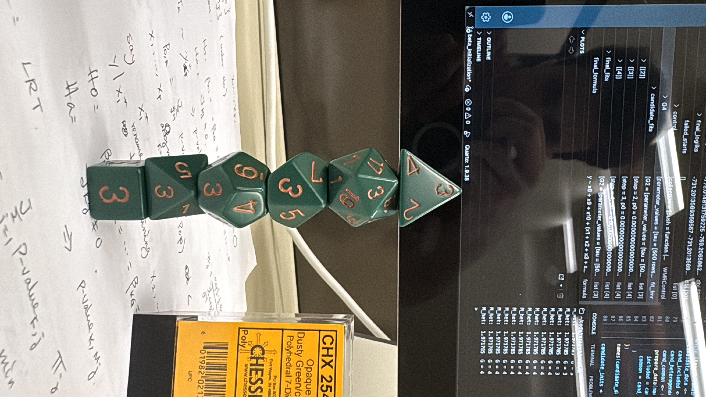
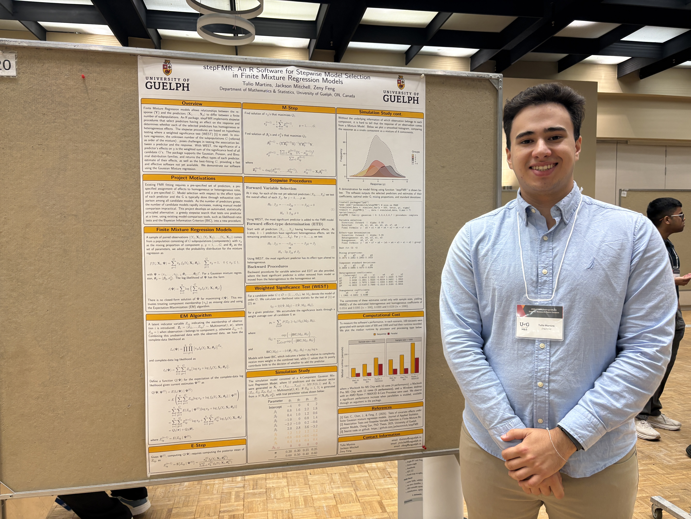

During the summer of 2026 (May-August), I worked as an undergraduate research assistant under Professor Zeny Feng in the Department of Mathematics and Statistics at the University of Guelph, alongside one other master student. My work was stepFMR, an R package for Finite Mixture Regression (FMR), a class of models used when a population is actually made up of several hidden subgroups, each with its own relationship between the predictors and the response. stepFMR implements a stepwise procedure that automatically selects which predictors matter and estimates their effects, and supports several common types of response data. The term was split between building and testing the package, studying the underlying theory, and preparing a conference poster.
Most of my time went into developing and testing stepFMR in R: implementing and debugging the core algorithms, testing different initializations, writing unit tests, running simulations, profiling performance, and keeping the documentation and package structure up to date. Alongside the coding, I spent a good amount of time studying the underlying math and statistics to make sure the implementation actually matched the theory.
The main highlight of the term was preparing and presenting a poster at an undergraduate research conference, an event open to the public. I spent about 1–2 weeks consolidating the code, running simulations across three different computers, and repeatedly redesigning and rewriting the poster itself.


Goal 1: Technological Literacy
This term deepened my R engineering skills more than pure numerical computing. Building class structures, package infrastructure, and parallelization taught me quirks of R like partial matching and a performance gap between different operating systems.
Goal 2: Information Literacy
Implementing the core theory meant constantly revisiting papers and notes to confirm what I was doing and that I actually understood them. That process of debugging against the theory taught me more than a first read ever could. In trying to solve some problems that came up, I also ended up discovering new optimization and machine learning algorithms, and clustering methods, through research of my own.
Goal 3: Written Communication
Preparing our conference poster was the clearest writing growth this term. Rewriting drafts repeatedly with my supervisor and learning to explain the software clearly to a diverse audience helped me know what details to include or cut. A journal paper is expected to come out of this work down the line, and the summarizing and audience-tailoring skills I built through the poster will carry directly into that writing.
This term pushed my R engineering skills well beyond what I'd built before, from package architecture and parallelization to writing tests and profiling performance, while also deepening how well I understand the statistical theory behind the models I was implementing. Presenting the poster pulled all of that together and sharpened how I explain technical work to people outside the field. stepFMR is open source, and you can check out the code here: stepFMR on GitHub.